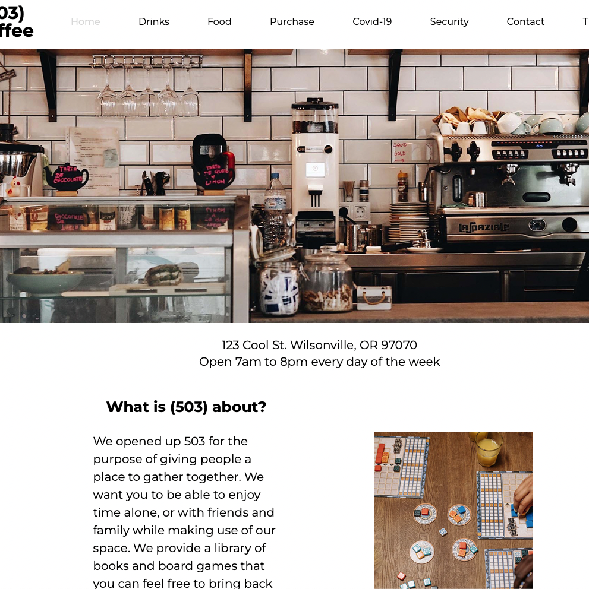
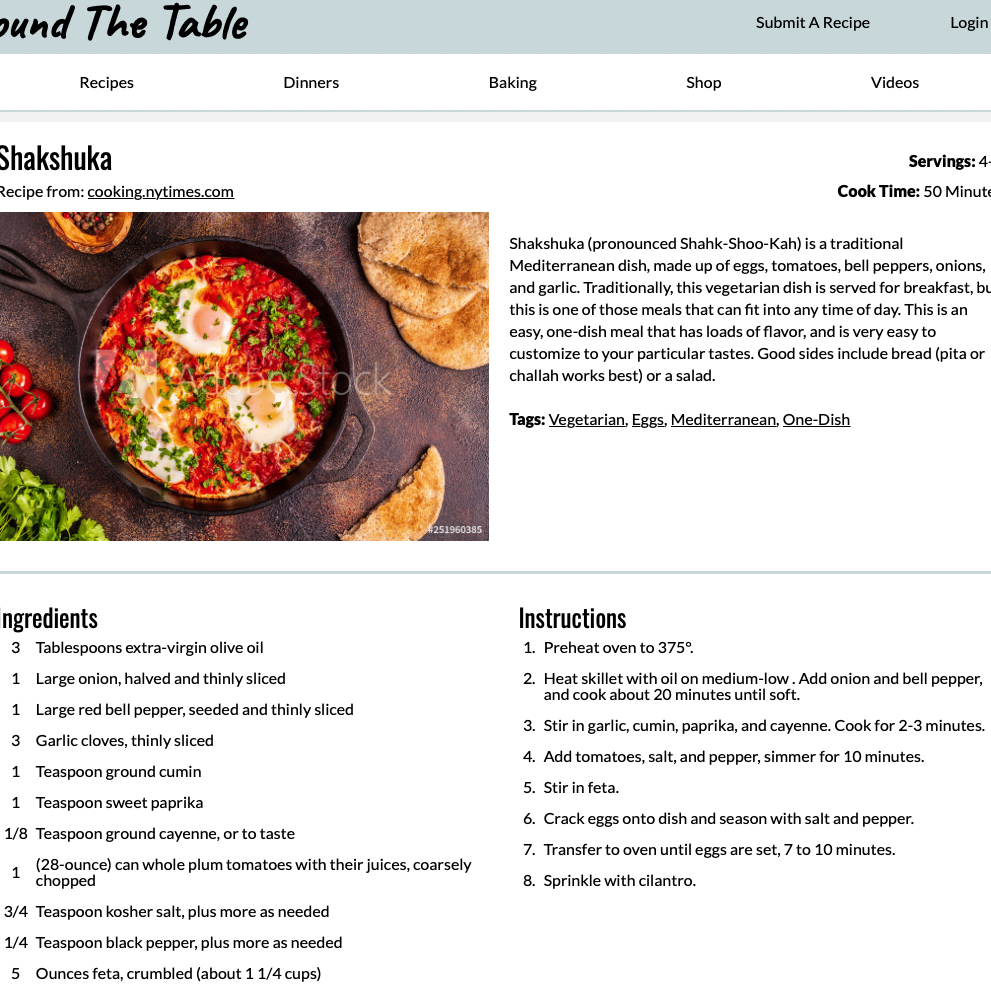
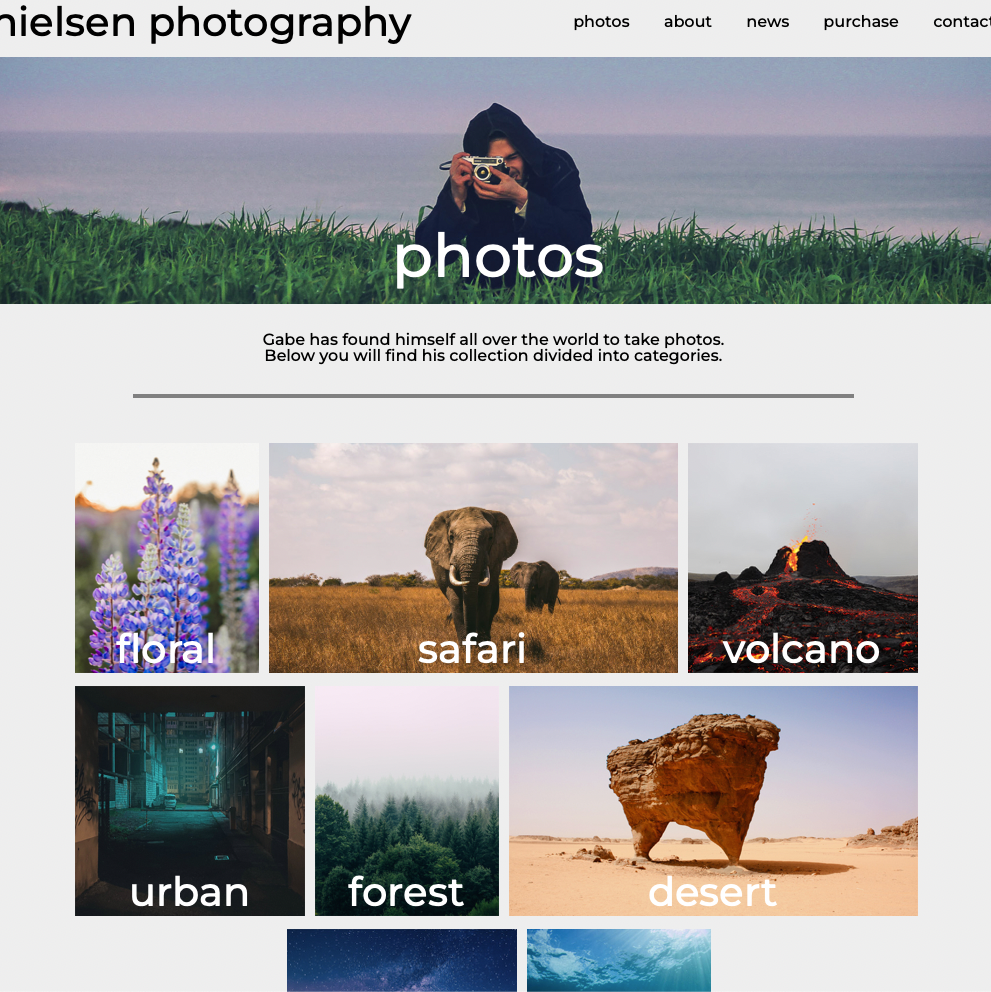

This was a project in my Javascript course at Arizona State University. It was my introduction to Javascript, and what really got me to love programming and see all of it's possibilities. It was built using HTML, CSS, and Javascript
This project was for my final CSS class. I had to design a fully responsive webpage for a recipe. This project took some time to get right, but it was very rewarding to see the final product. It was built with HTML and CSS.
This project was fun because I have always wanted to start a podcast. I really approached the project thinking about how I would probably end up using it one day when I got around to starting mine. I built it with HTML and CSS
This was an interesting project to work on, as I had not learned about CSS flex or grid yet. It really tested me, but I love the way it turned out! If I had to go back and make it again, I'm sure I would approach it much differently. It was built with HTML and CSS
